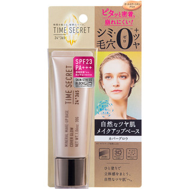

返回列表
产品名称：タイムシークレット ミネラルメイクアップベース カバーグロウ

スカイ・グループ タイムシークレット ミネラルメイクアップベース カバーグロウ ３０Ｇ
メーカー スカイ・グループ
JANコード 4580295035780
商品の特徴
艶めく質感を操る最強化粧下地です。
- 成分・分量
- 【成分】
水、シクロペンタシロキサン、ＢＧ、ジフェニルシロキシフェニルトリメチコン、エタノール、ラウリルＰＥＧ－９ポリジメチルシロキシエチルジメチコン、ジメチコン、ジメチコンクロスポリマー、トリフルオロアセチルトリペプチド－２、サンゴ末、セラミドＮＰ、ヒアルロン酸Ｎａ、ビワ葉エキス、グリセリン、（ビニルジメチコン／メチコンシルセスキオキサン）クロスポリマー、水酸化ＡＩ、硫酸Ｍｇ、ステアリン酸、（ジメチコン／（ＰＥＧ－１０／１５））クロスポリマー、ポリメチルシルセスキオキサン、クエン酸Ｎａ、ハイドロゲンジメチコン、アルミナ、トコフェロール、デキストラン、フェノキシエタノール、メチルパラベン、酸化チタン、タルク、マイカ、酸化鉄
- 用法及び用量
- 【使用方法】
普段のスキンケアでお肌を整えた後、手のひらに適量をとり、顔全体にムラなく均一にのばします。